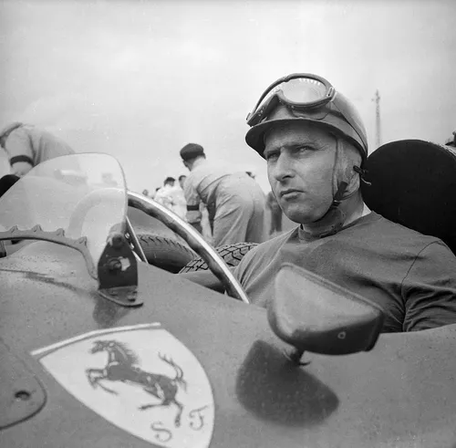
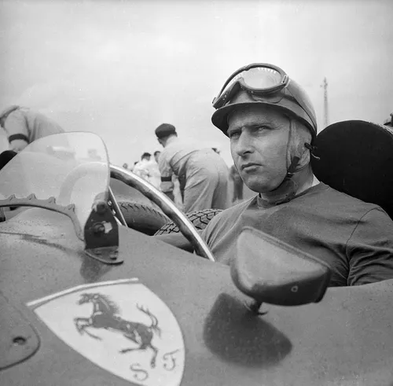

1. 후안 마누엘 판지오
50년대 최고의 드라이버 (드라이버 챔피언 5회) 
50년대 최고의 드라이버 (드라이버 챔피언 5회) 
2. 잭 브라밤
60년대 짐클락과 함께 전성기를 맞았던 드라이버 (드라이버 챔피언 3회)
60년대 짐클락과 함께 전성기를 맞았던 드라이버 (드라이버 챔피언 3회)
3. 짐 클락
브라밤과 마찬가지로 60년대를 지배했음 (드라이버 챔피언 2회)
브라밤과 마찬가지로 60년대를 지배했음 (드라이버 챔피언 2회)
4. 재키 스튜어드
기술적 혁신을 가져온 70년대의 드라이버이자 팀 엔지니어 (드라이버 챔피언 3회)
기술적 혁신을 가져온 70년대의 드라이버이자 팀 엔지니어 (드라이버 챔피언 3회)
5. 니키 라우다
죽을 뻔한 사고 이후 복귀한 페라리 전설 (드라이버 챔피언 3회)
죽을 뻔한 사고 이후 복귀한 페라리 전설 (드라이버 챔피언 3회)
6. 넬슨 피케
브라질리언 최초로 F1 트리플 크라운 달성 (드라이버 챔피언 3회)
브라질리언 최초로 F1 트리플 크라운 달성 (드라이버 챔피언 3회)
7. 알랭 프로스트
멕라렌의 황금기를 이끈 인물 (드라이버 챔피언 4회)
멕라렌의 황금기를 이끈 인물 (드라이버 챔피언 4회)
8. 아일톤 세나
역사상 가장 뛰어난 드라이버 중 한 명. 불운한 사고로 사망 (드라이버 챔피언 3회)
역사상 가장 뛰어난 드라이버 중 한 명. 불운한 사고로 사망 (드라이버 챔피언 3회)
9. 미카 하키넨
슈마허와 라이벌 구도를 형성한 90년대 최고의 드라이버 (드라이버 챔피언 2회)
슈마허와 라이벌 구도를 형성한 90년대 최고의 드라이버 (드라이버 챔피언 2회)
10. 미하엘 슈마허
베네통과 페라리에서 전설을 쓴 F1의 아이콘 (드라이버 챔피언 7회)
베네통과 페라리에서 전설을 쓴 F1의 아이콘 (드라이버 챔피언 7회)
11. 페르난도 알론소
20년간 현역을 유지한 최고의 베테랑 (드라이버 챔피언 2회)
20년간 현역을 유지한 최고의 베테랑 (드라이버 챔피언 2회)
12. 세바스티안 베텔
레드불의 전성기를 이끈 드라이버 (드라이버 챔피언 4회)
레드불의 전성기를 이끈 드라이버 (드라이버 챔피언 4회)
13. 루이스 해밀턴
2010년대 최고의 드라이버. 슈마허 이후 최다 기록 보유자 (드라이버 챔피언 7회)
2010년대 최고의 드라이버. 슈마허 이후 최다 기록 보유자 (드라이버 챔피언 7회)
14. 막스 베르스타팬
2020년대의 젊은 챔피언. 커리어 계속 상승 중 (드라이버 챔피언 4회)
2020년대의 젊은 챔피언. 커리어 계속 상승 중 (드라이버 챔피언 4회)